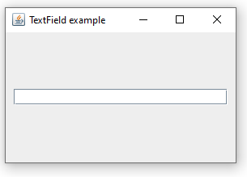
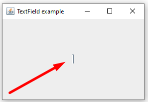
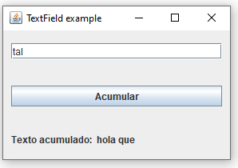

Como crear y usar cajas de texto.
Para crear un JTextField, lo hacemos así:
JTextField textField = new JTextField();NOTA: Para usar el JTextField tenemos que tener el siguiente import:
import javax.swing.*;
El parametro que le indicamos al crear el JTextField es el texto que se mostrará dentro de la caja de texto por defecto, si queremos que se muestre vacía no le pasamos ningún argumento (no hace falta pasar un string vacio).
Una vez tenemos creado el JTextField lo introducimos en nuestro contenedor:
contenedor.add(textField, gridConstraints);
El primer parametro es el componente que vamos a introducir y el segundo las propiedades del GridBagLayout para posicionar el elemento dentro del layout del contenedor.
Un ejemplo para usar getText sería el siguiente:
System.out.println(textField.getText());
Un ejemplo para usar setText sería el siguiente:
textField.setText("");
Este código borraría el contenido del TextField en caso de que hubiese algo escrito en el.
Al JTextField podemos asociarle un ActionListener, que se asociará al evento de pulsar la tecla Enter dentro de la caja de texto, por lo tanto cuando pulsemo Enter en el TextField se ejecutará el código que nosotros queramos.
Definimos el ActionListener así:
textField.addActionListener(new ActionListener() {
public void actionPerformed(ActionEvent e) {
System.out.println("Texto escrito: " + textField.getText());
}
});El evento mas común para un Textfield es el de pulsar la tecla enter dentro del mismo, pero tambien podemos asignar otros eventos como cuando hacemos click con el ratón en el TextField.
Para esto usaremos un MouseAdapter, de la siguiente manera:
textField.addMouseListener(new MouseAdapter() {
public void mouseClicked(MouseEvent e) {
textField.setText("");
}
});Con el código anterior lo que conseguimos es que al hacer click sobre el TextField si hay algo escrito se borra.
import java.awt.*;
import java.awt.event.*;
import javax.swing.*;
public class TextFieldApp extends JFrame {
public TextFieldApp() {
Container contenedor = getContentPane();
contenedor.setLayout(new GridBagLayout());
GridBagConstraints gridConstraints = new GridBagConstraints();
gridConstraints.gridx = 0;
gridConstraints.gridy = 0;
gridConstraints.weightx = 1.0;
gridConstraints.weighty = 1.0;
gridConstraints.fill = gridConstraints.HORIZONTAL;
gridConstraints.insets = new Insets(10, 10, 10, 10);
JTextField textField = new JTextField();
contenedor.add(textField, gridConstraints);
textField.addActionListener(new ActionListener() {
public void actionPerformed(ActionEvent e) {
System.out.println("Texto escrito: " + textField.getText());
}
});
textField.addMouseListener(new MouseAdapter() {
public void mouseClicked(MouseEvent e) {
textField.setText("");
}
});
pack();
setVisible(true);
setResizable(true);
setSize(300, 200);
setTitle("TextField example");
setDefaultCloseOperation(EXIT_ON_CLOSE);
}
public static void main(String[] args) {
new TextFieldApp();
}
}En el código anterior si quitamos la siguiente linea:
gridConstraints.fill = gridConstraints.HORIZONTAL;
Al ejecutar el programa veremos que se visualiza así:
Esto se produce porque al no haber ningun elemento más en esa columna y no tener la propiedad fill el TextField ocupa el menor espacio posible, para evitar este fallo asegurarse de que el componente va a tener un tamaño acorde a lo que necesitamos añadiendo un fill u otra propiedad que le dé un tamaño al componente.
Para lanzar una función cuando se producen cambios en un JTextField podemos hacerlo usando un DocumentListener, tal que así:
textField.getDocument().addDocumentListener(new DocumentListener() {
public void changedUpdate(DocumentEvent e) {
}
public void removeUpdate(DocumentEvent e) {
System.out.println("se ha borrado un caracter");
}
public void insertUpdate(DocumentEvent e) {
System.out.println("se ha introducido un caracter");
}
});Es obligatorio implementar las 3 funciones, aunque no las usemos todas.
Si queremos detectar la pulsación de teclas concretas dentro del TextField podemos hacerlo usando un KeyAdapter:
textField.addKeyListener(new KeyAdapter() {
public void keyReleased(KeyEvent e) {
}
public void keyTyped(KeyEvent e) {
}
public void keyPressed(KeyEvent e) {
System.out.println(e.getKeyCode());
}
});Usamos e.getKeyCode() para obtener el código ASCII de la tecla que ha sido pulsada.
Tenemos un TextField y un Label, tenemos que hacer que al escribir en el TextField y pulsar Enter el contenido del TextField se vaya acumulando en el label y el TextField se vacie para introducir más contenido.
Lo mismo que el ejercicio anterior pero ahora usaremos un boton para hacer que el texto se acumule.
Java | Swing | JTextField